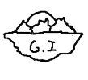
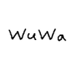
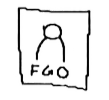

Genshin Impact
Genshin Impact is a open world game that allows the player to have four characters on a team. It
is created by Hoyoverse, formally called miHoyo. Its gameplay mechanics is based off of
elemental reactions in which you combine different elements to get a reaction that the player
wants. Others games created by Hoyoverse are Honkai: Star Rail, Honkai Impact 3rd, Zenless Zone
Zero.

source: Genshin Impact Fandom
Wuthering Waves
Wuthering Waves is an open world game, that is similar to the genshin impact, but you can only
slot up to 3 characters per team. Wuthering Waves better mobility with their QOL mechanics that
disables stamania comsumption upon running. The game is made by Kuro Games, and for those that
do not know,they also made Punishing:Gray Ravens.

source: Wuthering Waves Fandom
Fate/Grand Order
Fate/Grand Order is made by Lasengle, It is a turned based game, where you build up your team to
win. The game is based off the famous manga series Fate. The author is Knoko Nasu, who is
currently 50 years old as of writing this.

source: Wikipedia